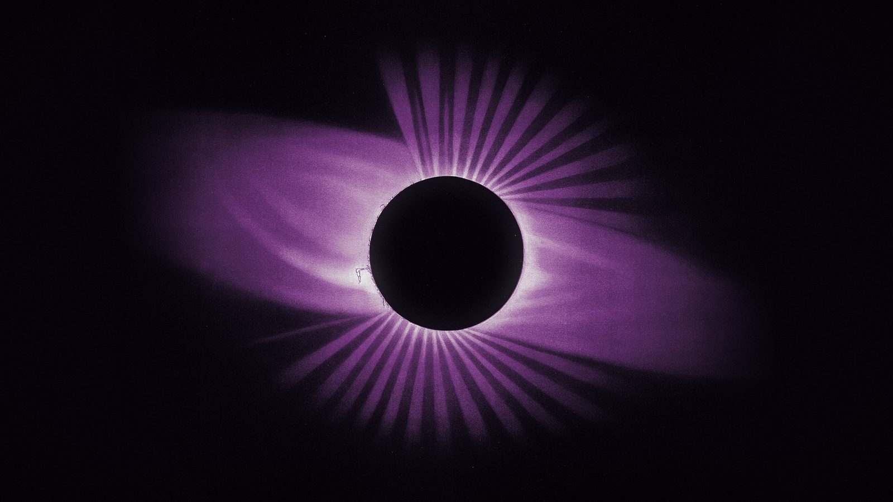
I build software that pays for itself.
Plate 0 · Total eclipse, after É. L. Trouvelot, 1878 · scrollThe company is presented like a set of astronomical plates in a museum drawer: each product is an observation, mounted on corona-pink paper, captioned in quiet caps. The imagery is É. L. Trouvelot's 1870s chromolithographs (public domain), re-inked as a duotone on hue 324: umbra ink and corona light. One idea per screen, a lot of dark space, and one moment of glow. The page opens on an eclipse and the moon is the aperture everything is seen through.
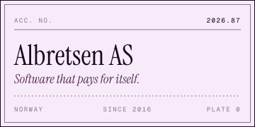
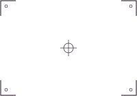
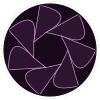
Albretsen
Quiet software that pays for itself.
claude mcp add albretsen https://albretsen.no/mcpThe mark is the moment just before totality: the moon almost covers the sun, the corona ring is broken by an aperture gap, and a single bead of light sits in it. It reads at 16 px as a dot in a ring.
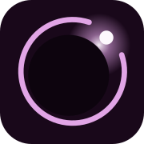
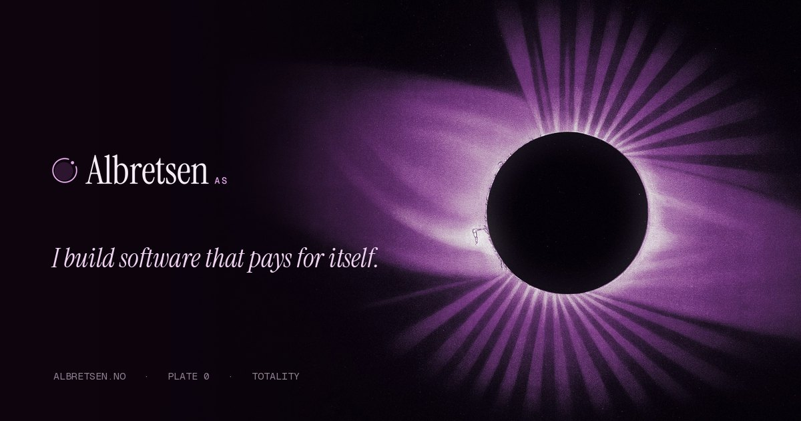
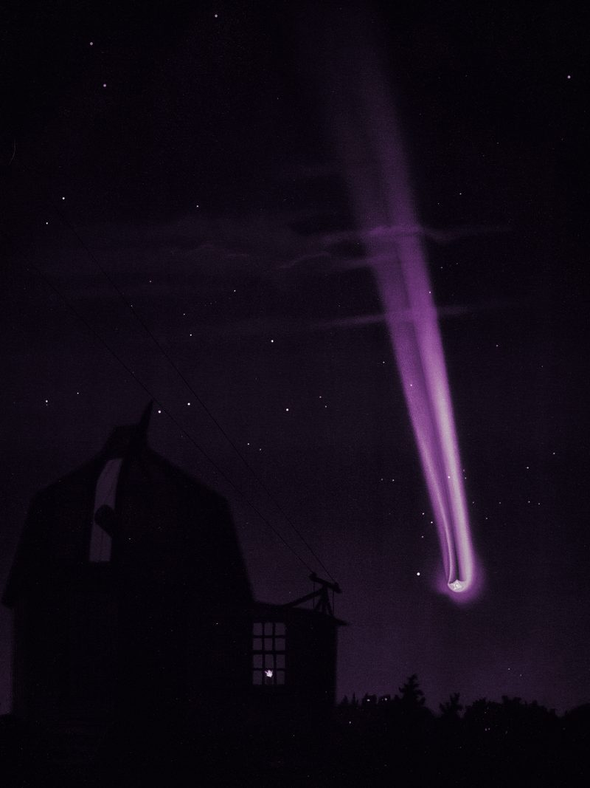
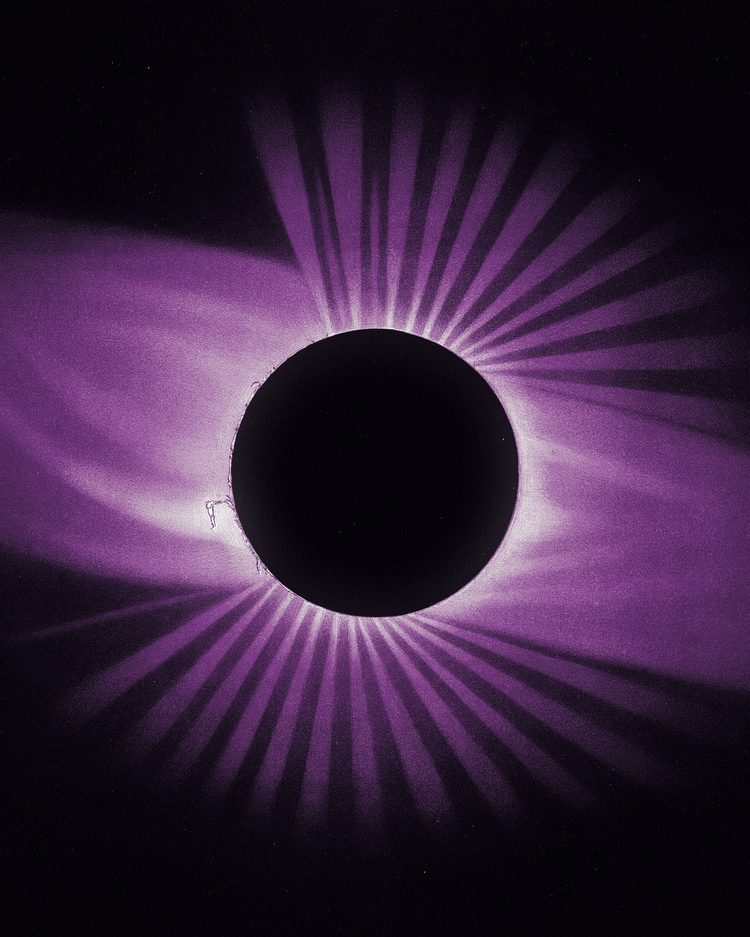
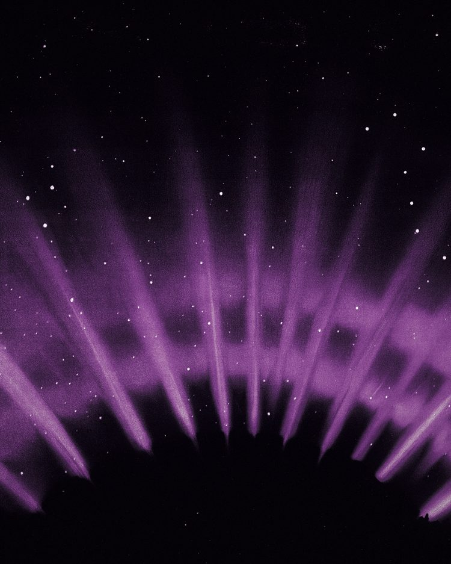
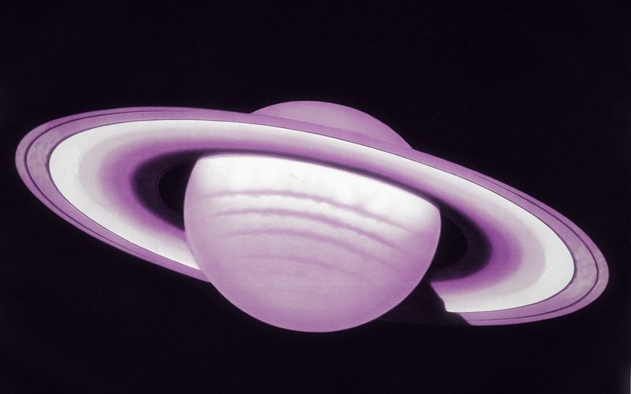
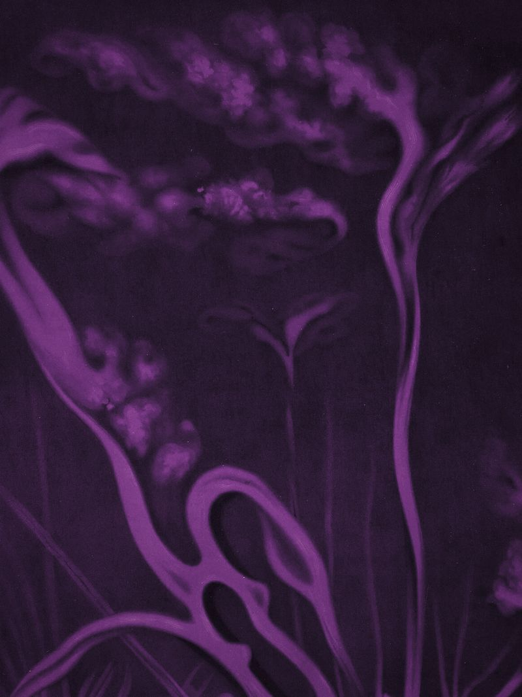
Each live or building product is a mounted plate. MCP Emails is the head of the Great Comet. Fun Libs rises where the aurora's rays begin. Toolrails eclipses the sun. Harbor, paused, is a veiled spot on the solar surface. Hover a plate: light rakes across it.
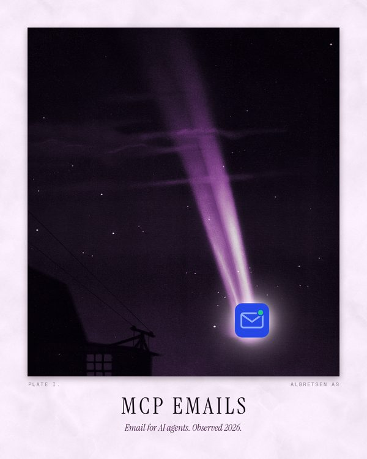
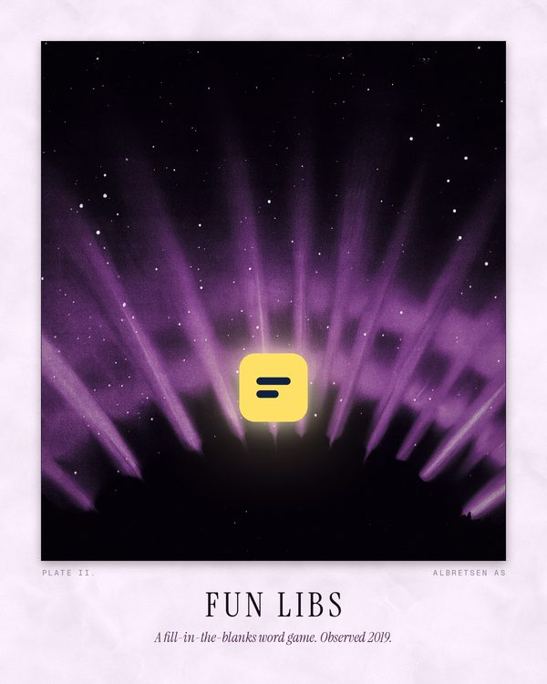
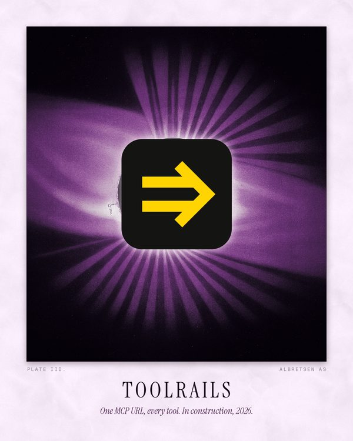
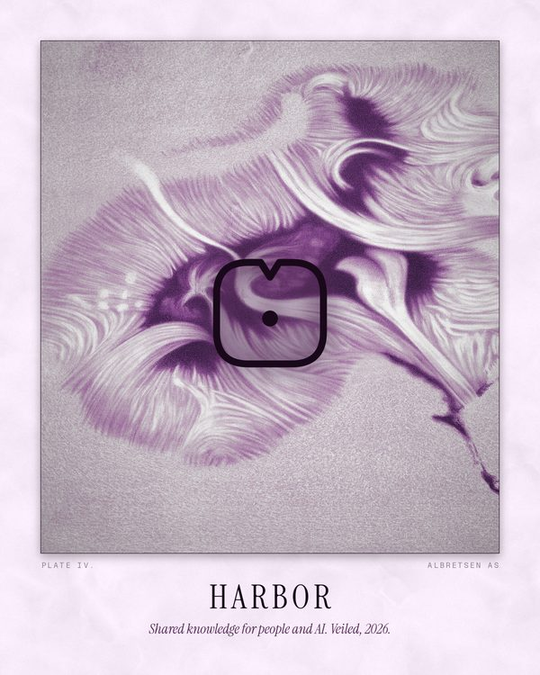
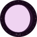
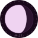
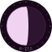
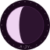
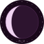
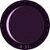
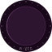
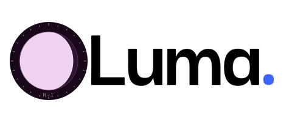
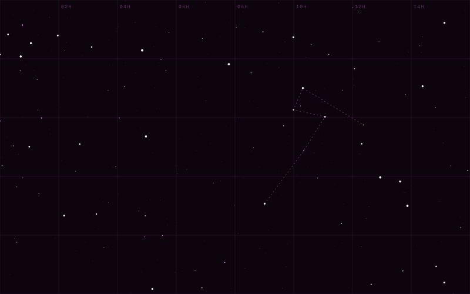
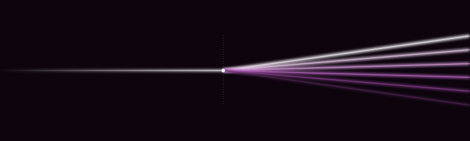
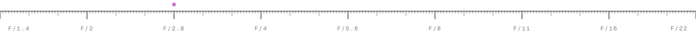
Everything moves like light, not like objects: it develops, settles and opens. Nothing bounces. The intro at the top is signature 1 (press Replay). The aperture cursor is live on this whole page.
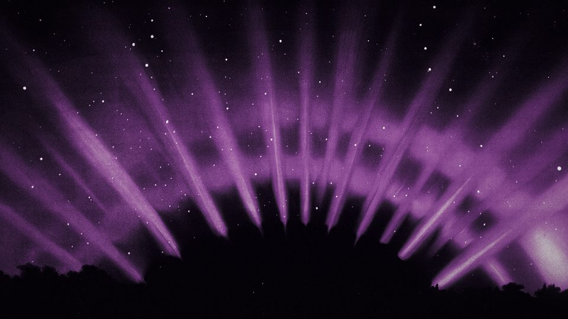
Highlights first, shadows last, like a print in the tray. 1.6 s, exposure ease.
Letters arrive split into glow and paper and converge to one ink, centre-out.
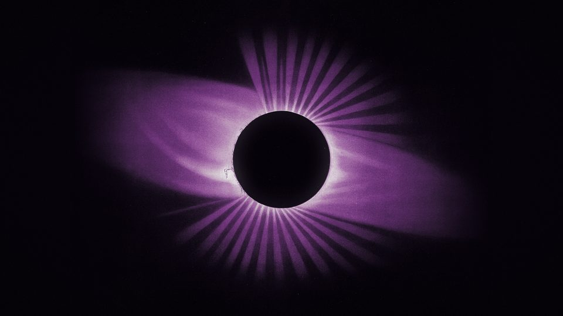
Scene change through the aperture: the clip opens from the click point (here, the disc).
Hover the plate: a sheen of corona light passes across it from the side you entered.
CSS-only idle glow for the bead (5.2 s). Use on the nav mark only.
Rules, rings and orbit paths draw themselves (pathLength = 1).
Raw WebGL, ~5 KB. Develop slider, fracture on fast pointer moves, moon parallax. Open full screen.